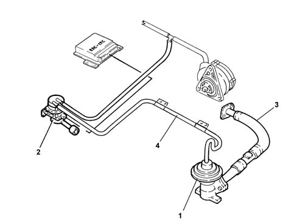
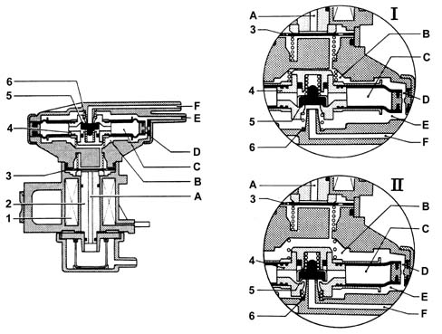
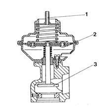

1080C exhaust gas recirculation system (e.g.r.)
- Path
- Descriptions > 10 ENGINE UNIT > 1080 EXHAUST EMISSION CONTROL SYSTEM > 1080C exhaust gas recirculation system (e.g.r.)
- Kind
- system description
- Applies to
- engines: 1.9 JTD 8V; all production periods
- Interactive page
- https://sloeber94.github.io/elrnDB-fMltpl/en/#/2888245
Applies to: engines: 1.9 JTD 8V; all production periods
The system is equipped with an E.G.R. valve (1) in order to reduce the NOx (nitrogen oxide) emissions still further.
The E.G.R. (Exhaust Gas Recirculation) valve carries out the function of taking some of the exhaust gases and returning them to the inlet chamber (2).
The E.G.R. valve is operated by the vacuum modulated by the solenoid valve (2) controlled by the injection control unit.
COMPOSITION
The system consists of the Pierburg EGR valve (1) and the vacuum modulating solenoid (3) and the pipes (3 and 4).
OPERATION
Depending on the rpm, fuel flow rate, intake air temperature and coolant temperature, the control unit drives the modulating solenoid with a square-wave signal.
The vacuum thus modulated controls the EGR valve which, by moving a shutter, regulates the flow of burnt gases from the exhaust manifold to the inlet manifold.
Information coming from the flow meter keepts the control unit constantly informed of the quantity of recirculated gas.
The atmospheric pressure signal (via the sensor in the fuel injection control unit) is used when the Borg Warner modulating solenoid is operated, to recognize when the car is driving at altitude and so reduce the quantity of recirculated gas and prevent engine fumes.

Vacuum modulating solenoid valve
Operation
The vacuum arrives at chamber E from duct F (case I) because the force of the spring (6) acts on the moving element (4) and the deviation valve (5) allows it to pass.
The vacuum then reaches chamber B and the surface of the shutter (3), via the compensation port D.
When the forces acting on the disc (3) are balanced, the atmospheric pressure in duct A enters chamber B, moving the moving element downwards (case II) therefore the valve (5) shutter closes duct F and places chamber E in contact with chamber C, which is at atmospheric pressure, decreasing the value of the vacuum in duct E.
The decreased vacuum value or the increased absolute pressure in chamber E raises the moving element (4) again (case I), closing port C and placing the valve (5) in the ideal condition (E in contact with F) and the cycle is repeated.

E.g.r. valve
Operation
This valve is driven by the vacuum generated by the brake servo pump and the modulating solenoid.
The EGR valve is driven as follows:
- if, following the signal received from the electronic control unit, the modulating solenoid creates a vacuum in the duct (1), the diaphragm (2) and shutter (3) connected to it are lifted, opening the gas passage whose cross-section depends on the vacuum in the duct (1). Thus the recirculation of an appropriate quantity of burnt gases to the inlet manifold is permitted;
- if not energized, the solenoid places the duct (1) in contact with the atmosphere, thus causes the shutter (3) to close; the recirculation of burnt gases is thus prevented in situations which so require.

1, Vacuum duct 2, Diaphragm 3, Shutter